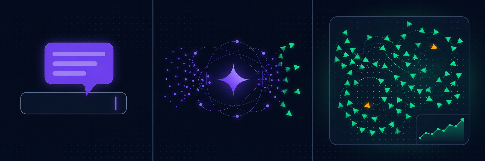

Ask in plain English. The AI writes the NetLogo code, runs it, and shows you the results.
Your whole modeling loop, by conversation
Twenty-five tools that let an AI assistant drive NetLogo end to end — from writing the model to sweeping its parameters.
Create models from chat
Describe a model and get working NetLogo code — with real interface widgets: sliders, switches, buttons, and monitors.
Run simulations
Step models forward and get tick-by-tick data back as clean markdown tables, ready for analysis or plotting.
BehaviorSpace sweeps
Run parallel parameter experiments through NetLogo's headless launcher and get summarized results per combination.
See the world
Export the NetLogo view as a PNG that appears right in your chat, and inspect world state, agents, and patch grids.
CoMSES library
Search and safely run peer-reviewed models from CoMSES Net — the largest curated library of agent-based models.
Watch it live
A real NetLogo window opens so you can watch simulations run — or switch to headless mode for servers and CI.
From install to first model in three steps
-
1
Install the server
Run
pip install netlogo-mcp. You'll need NetLogo 7+ and a Java JDK — or use the Docker image that bundles both. -
2
Connect your AI client
Add one
netlogoentry to your client's MCP config. Works with Claude, Cursor, VS Code, and more. -
3
Just ask
Tell your assistant what to model. It writes the code, runs the simulation, and shows you the results.

25 tools across the modeling workflow
A focused toolset, grouped by what it does.
NetLogo control
Create, open, run, and inspect models — commands, reporters, parameters, exports, and agent sampling.
CoMSES library
Search, resolve, download, and read peer-reviewed models from CoMSES Net — with safe archive handling.
BehaviorSpace
List, preview, and run parameter-sweep experiments through the headless launcher.
Works with your AI assistant
Any tool that speaks the Model Context Protocol.
Quick start
Install, then point your client at the server.
# install from PyPI
pip install netlogo-mcp
{
"mcpServers": {
"netlogo": {
"command": "netlogo-mcp",
"env": {
"NETLOGO_HOME": "C:/Program Files/NetLogo 7.0.3",
"JAVA_HOME": "C:/Program Files/Eclipse Adoptium/jdk-21"
}
}
}
}
See docs/CLIENTS.md for exact config for all 11 clients.
Frequently asked questions
What is NetLogo MCP?
NetLogo MCP is the first Model Context Protocol (MCP) server for NetLogo. It connects AI assistants like Claude, Cursor, and VS Code Copilot to NetLogo, so you can create, run, and analyze agent-based models by typing what you want in plain English.
Which AI assistants work with it?
Any client that supports MCP: Claude Code, Claude Desktop, Cursor, Windsurf, VS Code (Copilot), Cline, Continue, Roo Code, Zed, OpenCode, and Codex.
Do I need NetLogo installed?
Yes — NetLogo MCP drives a real NetLogo install (7.0+) through its Java runtime, so you need NetLogo and a Java JDK 11+. Prefer no host install? Use the Docker image, which bundles headless NetLogo and its JRE.
Is it free?
Yes. NetLogo MCP is free and open source under the MIT license. No account, no ads. The code is on GitHub.
Does it open a NetLogo window?
By default a real NetLogo window opens on the first model tool call so you can watch simulations run live. The window only appears when you actually use a tool — not when your client connects. Set headless mode for servers or CI.
Start modeling by conversation
Install in one command, connect your AI client, and let it run the simulation.